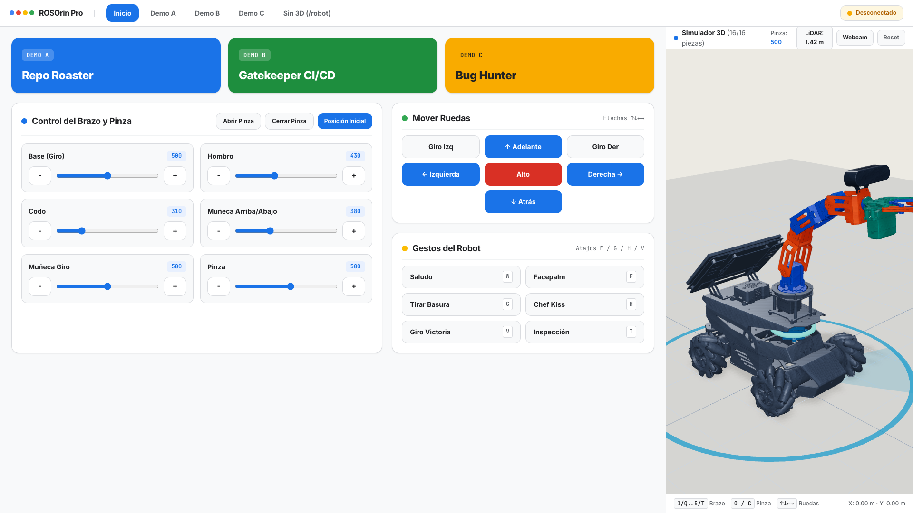
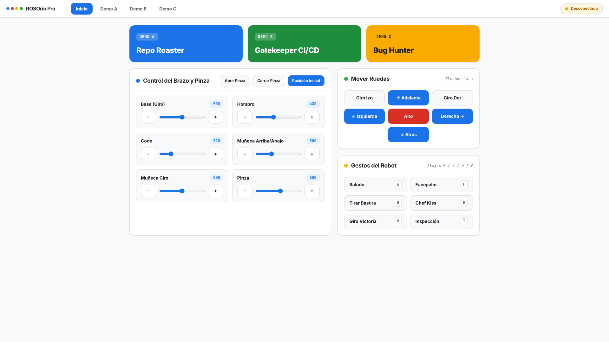
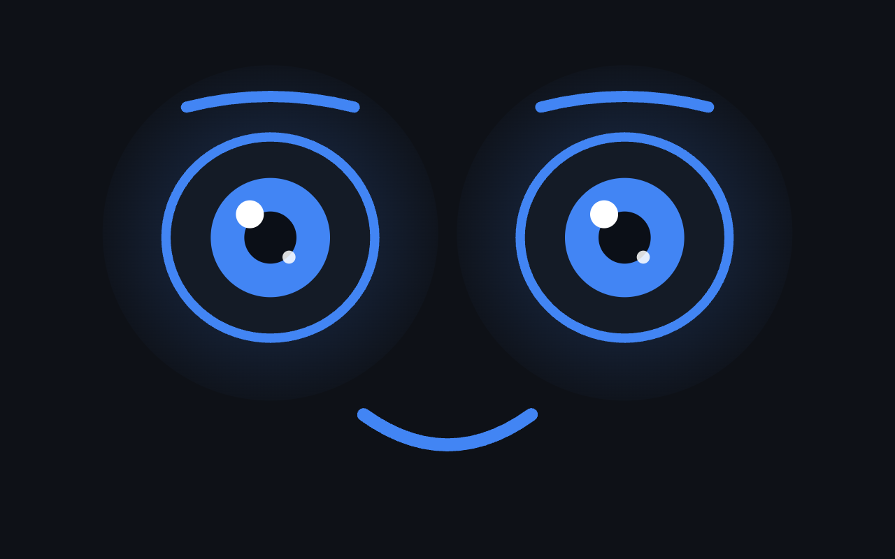

Control en vivo de los 6 servos del brazo, las llantas Mecanum y el simulador 3D.
div.ID 10) suelta el objeto de verdad.120..880) fuerza o choca un servo.
ROS 2 usa internamente DDS (su bus de mensajes local entre nodos). Exponer ese bus directo al navegador deja los motores sin filtro; el API en :9000 valida cada acción y transmite la telemetría por WebSocket a 20 Hz.
El bridge atiende WebSockets a 20 Hz, ejecuta el loop cinemático de 40 Hz y vigila el watchdog al mismo tiempo sin bloqueos del GIL ni pausas de garbage collector, en un único binario nativo para laptop y Jetson.
Escribir desde cero el driver USB de la cámara 3D Deptrum Aurora 930 o del LiDAR MS200 no aporta valor. ROS 2 entrega /scan y /depth_cam/rgb0/image_raw listos para consumir desde el bridge.
[y, x].BLOCKING y TTS externo: responde en TEXT (ruteando el habla a un TTS como tool) y espera a que cada acción termine antes del siguiente paso.24 kHz directo: conversa y maneja barge-in en ~350 ms sin pasar por un TTS externo.NON_BLOCKING por defecto: como las bandejas y tótems tienen poses fijas en Rust, dispara el gesto y sigue hablando mientras se mueve.
Acceso directo a los demos, control individual de cada servo (120..880), cruceta Mecanum y gestos completos.
Renderiza las 16 mallas CAD del fabricante en tiempo real siguiendo los pulsos que emite robot-bridge a 20 Hz.


Evita que el agente de código alucine pines o tópicos inexistentes en el hardware real:
ID 10: no ID 6 (1..5 son el brazo).joint2 < 220./depth_cam/rgb0/image_raw.0xAA 0x55 en /dev/rrc a 1 Mbps.
Estandariza la sesión WebSocket bidireccional con gemini-3.8-live en TypeScript:
16 kHz y salida a 24 kHz.interrupted.
Construye el clon 3D a 60 FPS a partir de las mallas CAD del fabricante:
computeVertexNormals() + DoubleSide.J1..J5 + pinza.20 Hz: refleja --backend mock y ros2.
En gemini-3.8-live, las herramientas se ejecutan en modo no bloqueante por defecto: cuando llega un toolCall, despachamos el gesto físico a robot-bridge y el modelo sigue hablando sin pausas.
Ventana de supresión de micrófono tras cada movimiento del brazo.
El zumbido mecánico de los 6 servos y la bocina del robot disparaban falsas interrupciones en Gemini Live. Aplicamos una compuerta de ruido de 3 capas y vaciado inmediato de la cola PCM.
Aunque alguien pida el pulso 0 o 1500, Rust recorta cada articulación a su rango seguro y protege el LiDAR (joint2 >= 220).
Si el Wi-Fi del escenario cae o se cierra la pestaña mientras el robot avanza, el bridge envía cmd_vel = 0 automáticamente a los 600 ms.
El reflejo de parada vive en el loop de 40 Hz en Rust: si hay un obstáculo a menos de 28 cm, bloquea vx > 0 sin consultar al LLM.
Cada 25 ms, robot-bridge evalúa el freno LiDAR, verifica el watchdog e interpola suavemente los 6 servos aplicando clamp_servo_pulse antes de escribir al puerto serial o a ROS 2.
Dos segundos y medio de silencio mirándote fijo antes de mover un milímetro el brazo rompen por completo la interacción.
El modelo emite toolCall en el mismo flujo WebSocket que la primera sílaba de voz: el brazo empieza a moverse mientras empieza a hablar.
Si le pides a un modelo de lenguaje que calcule los 6 pulsos para depositar una llave en una bandeja, fallará la coordinación entre hombro, codo y apertura de pinza.
El LLM decide el juicio de alto nivel (approve o reject); el bridge en Rust ejecuta la coreografía cinemática exacta con tiempos, LEDs y apertura de pinza sincronizados.
< 20 ms.
Incluye el bridge robot-bridge en Rust, el simulador 3D con las 16 piezas STL y los skills (rosorin-pro, gemini-live-js y threejs-urdf-twin).
Usa las flechas del teclado (← / → / Espacio) para avanzar y F para pantalla completa.
Arranco con el demo moviendo el robot y el simulador 3D desde el navegador. Luego planteo la pregunta de arquitectura al controlar hardware y la diferencia física entre renderizar un DOM sin masa y mover 3.5 kg de aluminio.
Explico la arquitectura end-to-end con gemini-3.8-live, las 4 capas del stack, por qué Rust corre el loop de 40 Hz + WebSocket 20 Hz sin bloqueos del GIL ni pausas de garbage collector en un solo binario, y cómo funciona el simulador 3D con --backend mock.
Muestro el simulador de 16 piezas STL, la consola ligera /robot, la pantalla táctil /face, los 3 skills del repo (rosorin-pro, gemini-live-js, threejs-urdf-twin) y el código de conexión a gemini-3.8-live.
Recorro la compuerta acústica de 1,200 ms, los 3 guardrails físicos en Rust con su código real del loop de 40 Hz, la diferencia de latencia al hablar y moverse en paralelo, el diseño de herramientas con intención física, el demo final y el resumen en texto de los 3 aprendizajes.